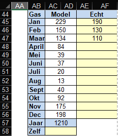
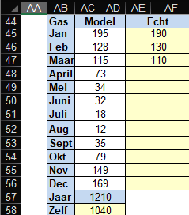

Gasverbruik
zondag 27 april 2025
22:32
Als geen jaarverbruik bekendOp het basisblad is een tabel toegevoegd om een schatting te maken van het jaarverbruik gas.
Het huidig gasverbruik, berekend door het model, is weergegeven in cel AC57. Op basis van dit berekende gasverbruik en de verdeling van graaddagen over de maanden, rekening houdend met het verbruik van warm tapwater, wordt hieruit het maandverbruik in de kolom AC45 - AC56 berekend.
Vul nu voor een aantal maanden in de kolom AE45 - AE56 het gasverbruik van een aantal maanden in (liefst van een aantal wintermaanden). In dit voorbeeld zijn de maanden jan/ feb / maart ingevuld. |  |
Vergelijk nu beide kolommen en geef op basis hiervan in cel AC58 een schatting van het jaarverbruik.
Dan zullen de maand-verbruiken in de cellen AC45-AC56 worden aangepast.
Na enig proberen, zien we dat een schatting van 1040 m3 gas per jaar een goede overeenkomst geeft voor het gasverbruik over de maanden die we hebben ingevuld. |  |
Inzicht WarmteLek Woningen.